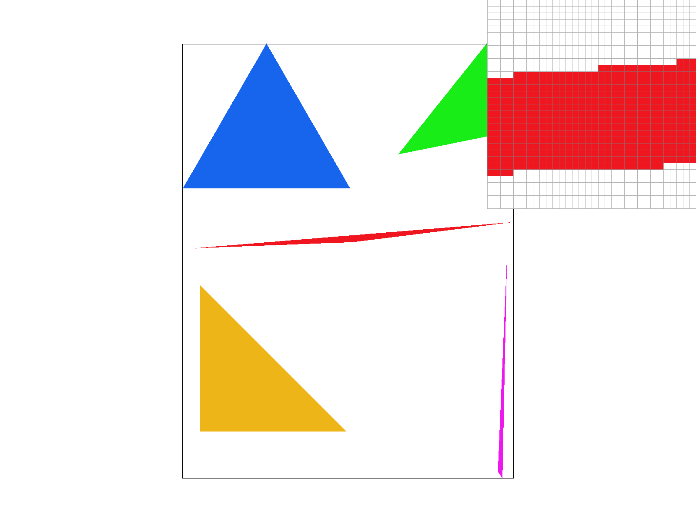
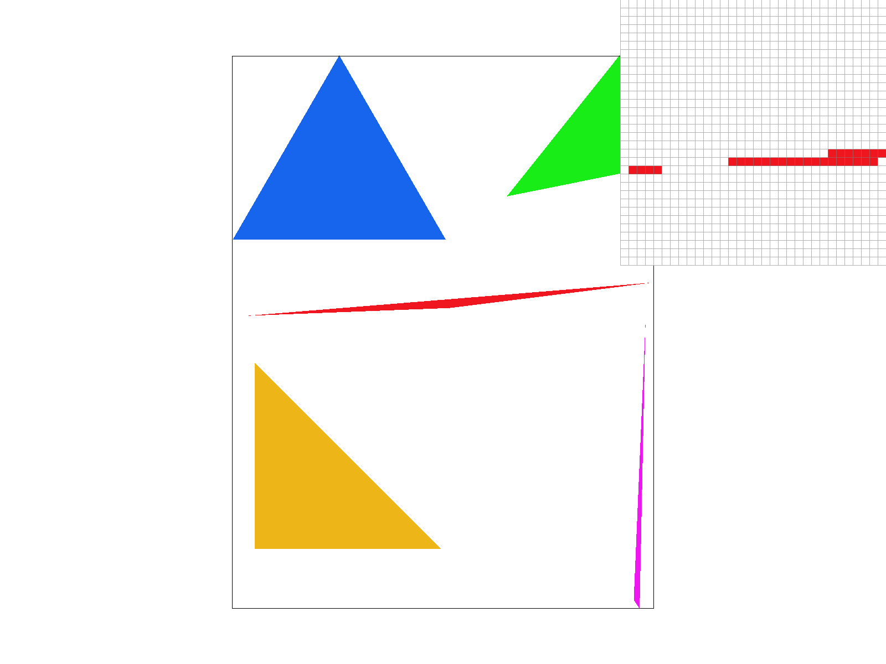
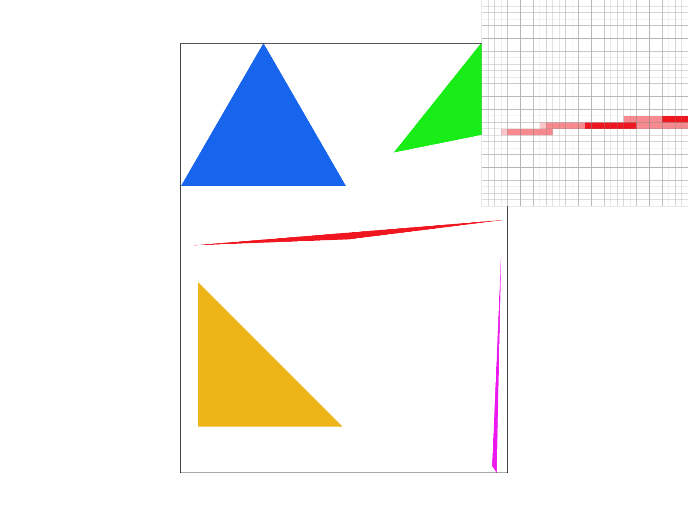
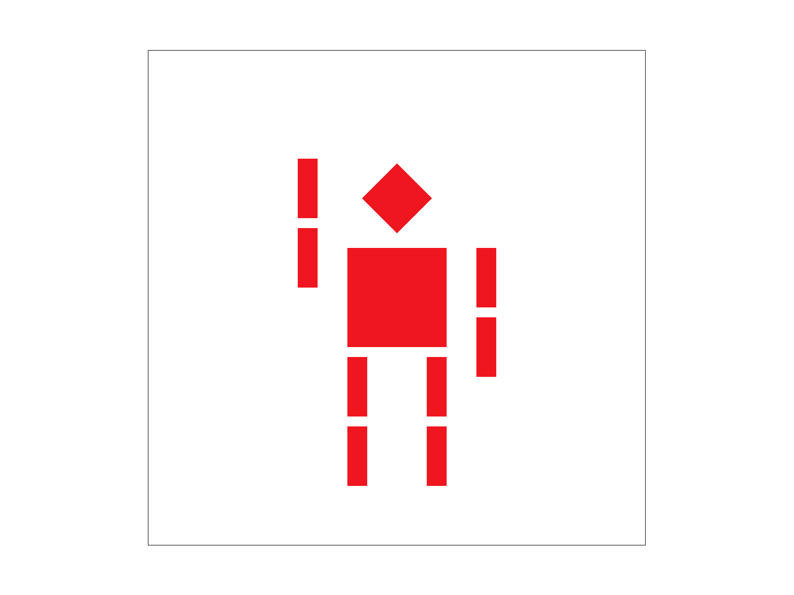
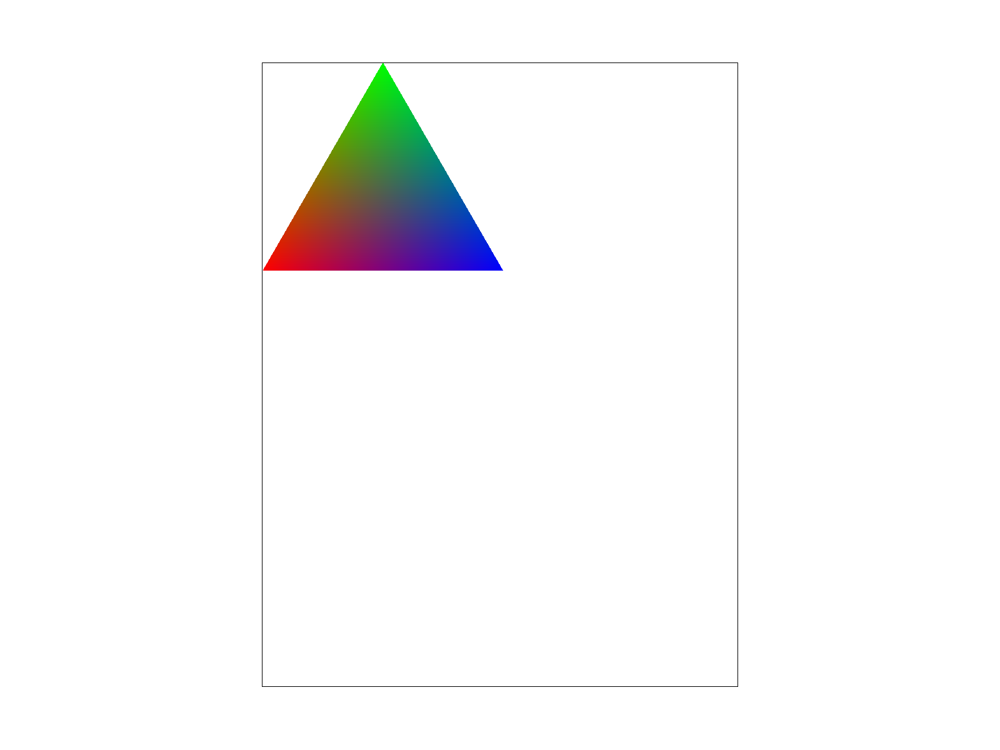
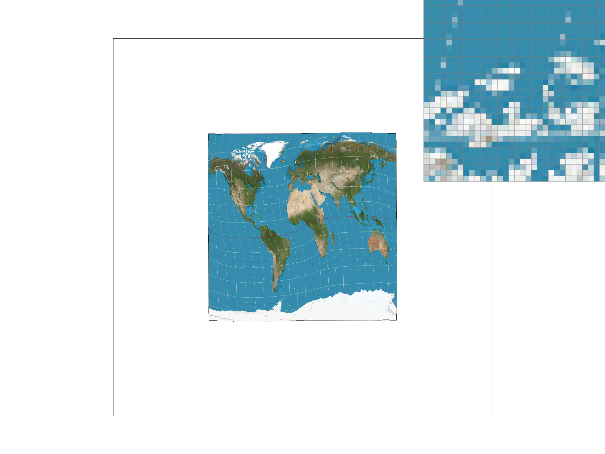
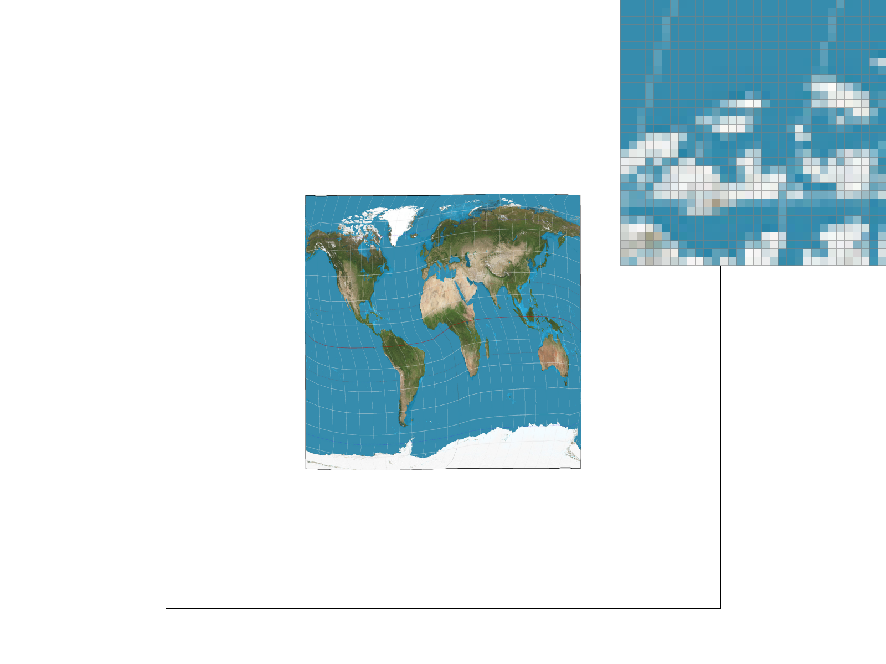
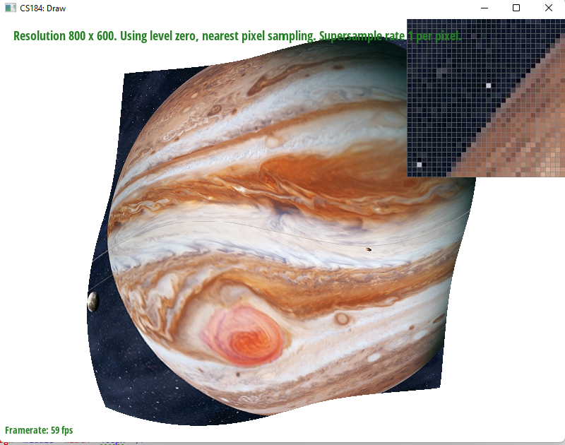
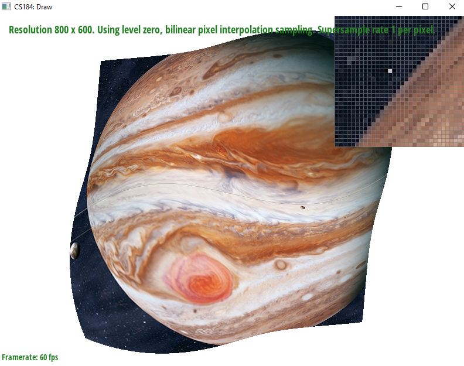

Overview
Give a high-level overview of what you implemented in this project. Think about what you've built as a whole. Share your thoughts on what interesting things you've learned from completing the project.
Section I: Rasterization
Part 1: Rasterizing single-color triangles
Implementation and Algorithm: We first obtain constants dXi based on 3 vertices' coordinates. They will be used to construct three L(x,y) test functions later. We then obtain the bounding box of the triangle by finding the min/max values of the x values and y values. For each sample in the bounding box, we first check if the sample is on screen, then perform the point-in-triangle test for the center of the sample. If the sample passes all the checks, we fill the pixel.
Key Observation: The order that the vertices of the triangle are given to us can be either clockwise or counter-clockwise. Regardless, if the results of three L(x,y) are all non-negative or all non-positve, the point is either on a triangle edge or in the triangle.
"Edge Case" Handling: All samples lying on at least an edge are drawn.
Efficiency: We find the bounding box of the triangle first and perform the check for each sample with in bounding box. Therefore, it satisfies the requirement.
test4.svg Screenshot:
Part 2: Antialiasing triangles
Implementation and Algorithm: We set the sample buffer to be a 1-D vector of dimension width * height * sample_rate, and it stores the color values of each samples. In the rasterize_triangle function, instead of performing the point-in-triangle test just once at the center of each pixel, we do it at every sample locations within each pixel, and store the results directly in the sample buffer. Notice we no longer use the fill_pixel function here. In the resolve_to_framebuffer function, we take the average of all the samples within each pixel and store the results in rgb_framebuffer_target. For the fill_pixel function, we fill every sample in the pixel with the same color, so that lines and dots can be rendered properly.
Supersampling is useful because it's equivalent of applying a 1-pixel box filter to the image, which reduces higher signal frequencies. Specifically, supersampling will give us intermediate pixel values, so the edge/corner of the triangles will look smoother. The modifications we made and how we used supersampling are explained in the paragraph above.
|

|

|
|
|
We observe that the edges become more blurry as the smaple rate increases. That's because with higher sample rate, we take more granular samples. There will be more mixed "point-in-triangle" test results within each pixel, which gives us more intermediate pixel values when taking the average.
Part 3: Transforms
We rotate both arms of the cubeman by 90 degrees clockwise. We also translate the right arm of cubeman a bit to match the height of the shoulder. Now the cubeman is waving.
Section II: Sampling
Part 4: Barycentric coordinates
Barycentric coordinates gives a relative location of a point with respect to three vertices of the triangle. In other words, it tries to express the point of interest as a linear combination of three vertices. We can use Barycentric coordinates to interpolate values in the triangle. For example, in the image (below left), three vertices are colored red, green, and blue respectively. We label these three vertices as r, g, b based on their color. If we just look at the r-b edge of the triangle, as we move from r to b, the color of the points are turning less red and more blue gradually. This is because the weight of r is decreasing while the weight of b is increasing.
|

|

|
Part 5: "Pixel sampling" for texture mapping
Pixel sampling is the process of setting values at a given location by sampling pixels nearby. In this project we used two different methods of pixel sampling: nearest sampling and bilinear sampling. Nearest sampling picks out a value by sampling the nearest pixel to the point and using that value. On the other hand, bilinear sampling works by sampling the four nearest pixels and linearly interpolating the values at each pixel to get a value at the given coordinates. We used these pixel sampling techniques to obtain the color values at a given point in the image by sampling the coordinates in the texture grid. We have the following four images to compare sampling rate and method:
|
|

|
|

|
|
We see that bilinear sampling is much more effective at a lower sample rate. Meanwhile, both methods produce better results at a higher sample rate, with bilinear sampling perhaps taking the edge. Nearest sampling just pick the pixel closest to the point of interest, so it looks more "pixelated". Bilinear sampling interpolates across four nearest neighbors, so it looks much smoother. Therefore they will have a large difference at lower sampling rate. However, when the sampling rate is relatively high, there is much less distance between each pair of samples, so the texture difference among nearest neighbors are smaller and nearest sampling wouldn't look as pixelated as before.
Part 6: "Level sampling" with mipmaps for texture mapping
Level sampling with mipmaps is the process of using different precision levels based on the magnitude of the Jacobian when traversing from (x, y) to (u, v) coordinates. For large changes in the position we sample from higher resolution and for small changes we use lower resolution. This helps reduce Moire patterns in the resulting image. The cost of this is more memory usage and reading time. Moreover, if we use trilinear filtering between levels then we double the reading time. Below are four images with different combinations of nearest pixel sampling, bilinear pixel interpolation, level zero sampling and nearest level sampling.

L_ZERO, P_NEAREST |

L_ZERO, P_LINEAR |

L_NEAREST, P_NEAREST |
L_NEAREST, P_LINEAR |
Section III: Art Competition
If you are not participating in the optional art competition, don't worry about this section!
Part 7: Draw something interesting!
Here is an example 2x2 gridlike structure using an HTML table. Each tr is a row and each td is a column in that row. You might find this useful for framing and showing your result images in an organized fashion.

|

|

|

|